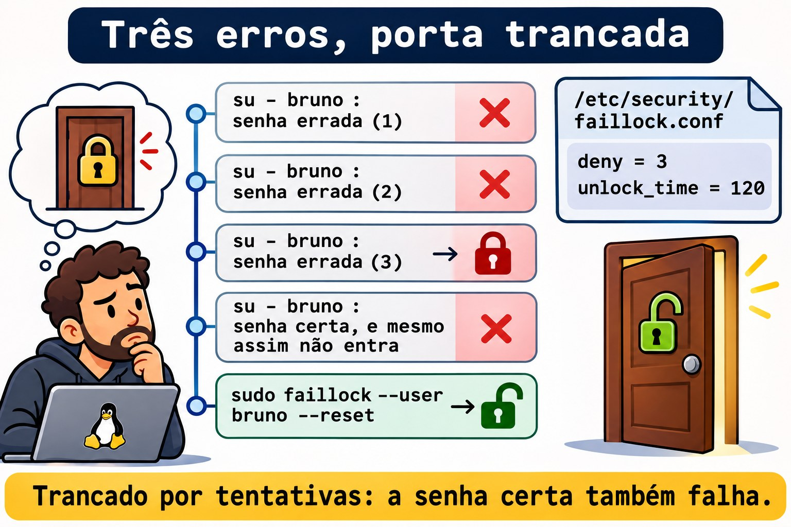

Aula 10.2 · Senhas e validade
No Windows, a política de senha mora numa GPO: tamanho mínimo, complexidade, histórico, bloqueio depois de tantas tentativas. Você marca as caixas e todo login passa a obedecer. No Linux, quem decide é o PAM, uma pilha de módulos que cada programa de login consulta. Na Aula 2.6 você usou o chage numa conta. Nesta aula você monta a política inteira: qualidade da senha, bloqueio por tentativas e validade, e aplica nas contas que já existem.
Núcleo desta aula: ler uma pilha do PAM em
/etc/pam.d/; ligar recursos peloauthselect(Rocky) ou pelopam-auth-update(Debian), nunca editando os arquivos gerados; definir a qualidade em/etc/security/pwquality.conf.d/*.conf; bloquear tentativas com opam_faillocke soltar comfaillock --reset; e lembrar que ologin.defssó vale para contas novas: as antigas recebemchage. O resto é aprofundamento.
| Ficha | |
|---|---|
| Módulo | M10 · Usuários e acesso privilegiado, aula 2 de 4 |
| Quando | Semana 15 |
| Ao final | Você define e testa uma política de senha, bloqueia e desbloqueia contas por tentativas e aplica validade em contas existentes |
| Pré-requisitos | Aulas 2.6 e 10.1 |
| Tempo | cerca de 2h |
| Snapshots | m10a2-inicio e m10a2-fim na rocky-lab e na debian-lab |
1 · Aquecimento
Responda antes de ler.
- Você colocou
PASS_MAX_DAYS 90no/etc/login.defs. A senha do Bruno vence em 90 dias? - O
roottroca a senha da Ana por123. O sistema aceita? - A conta do Bruno foi bloqueada por senha errada. Ele entra por SSH com chave?
2 · Por que importa
| O chamado | A resposta errada | O que ela causa |
|---|---|---|
| "Exija senhas de 12 caracteres" | Editar o /etc/pam.d/system-auth na Rocky | O próximo authselect desfaz a mudança sem avisar |
| "As senhas têm que vencer em 90 dias" | Mudar só o login.defs | As contas que já existem continuam sem vencer |
| "Bloqueie depois de 3 tentativas" | deny=3 sem unlock_time pensado | Um robô tranca as contas de todo mundo, e só você destrava |
| "O usuário está bloqueado" | passwd -u | Não é o passwd que bloqueou: é o faillock |
| "O estagiário precisa trocar a senha no primeiro acesso" | Mandar um e-mail pedindo | Ninguém troca; a senha provisória fica para sempre |
3 · Modelo mental
Pense numa portaria com quatro guichês, sempre na mesma ordem. O primeiro confere quem você é (
auth). O segundo confere se você pode entrar agora (account): conta vencida, bloqueada, fora do horário. O terceiro só abre quando você troca a senha (password) e confere se a nova presta. O quarto prepara a sua sessão (session): limites, pasta, registro. Cada programa (osshd, osu, ologin, opasswd) tem a sua fila, em/etc/pam.d/. E cada guichê tem vários atendentes em sequência: os módulos.
/etc/pam.d/su (cada programa tem um arquivo)
auth → pam_faillock preauth já está trancado?
pam_unix a senha confere?
pam_faillock authfail errou: conta mais uma
account → pam_unix a conta ou a senha venceram?
password → pam_pwquality a senha nova presta?
pam_unix grava o hash no /etc/shadow
session → pam_limits, pam_unix limites e registro| Controle | Se o módulo diz sim | Se o módulo diz não |
|---|---|---|
required | Segue | Segue, mas o resultado final é não |
requisite | Segue | Para na hora: não |
sufficient | Para na hora: sim (se nada antes falhou) | Segue, como se ele não existisse |
optional | Só conta se for o único | Só conta se for o único |
include e substack | Puxa as linhas de outro arquivo | Idem |

Ponte Windows
| No Windows | No Linux | Onde a comparação engana |
|---|---|---|
| GPO de senha | pwquality.conf e o módulo pam_pwquality | Vale só na troca de senha, e o root pode passar por cima |
| Limite de bloqueio da conta | pam_faillock e faillock.conf | Na Rocky, liga com authselect; no Debian, não vem ligado |
| Duração máxima da senha | chage -M por conta | O login.defs só define o padrão de quem ainda vai nascer |
| "O usuário deve alterar a senha no próximo logon" | chage -d 0 | Idêntico, inclusive no efeito |
| Cada serviço autentica do seu jeito | Todos passam pelo PAM | Uma linha errada num arquivo trava o login de todos |
4 · O essencial
Quem escreve os arquivos do PAM
| Rocky | Debian | |
|---|---|---|
| Arquivos comuns | system-auth e password-auth | common-auth, common-account, common-password, common-session |
| Quem gera | authselect | pam-auth-update, a partir de /usr/share/pam-configs/ |
| Ver o estado | authselect current | pam-auth-update (menu) e grep nos common-* |
| Ligar um recurso | sudo authselect enable-feature with-faillock | Instalar o pacote; ele se registra no pam-auth-update |
| Qualidade de senha | Já vem ligada (pam_pwquality) | sudo apt install libpam-pwquality |
Editar à mão um arquivo gerado funciona até a próxima atualização, que regrava tudo. Na Rocky, o authselect check avisa se alguém mexeu.
Qualidade da senha
sudo tee /etc/security/pwquality.conf.d/10-curso.conf <<'EOF'
minlen = 12
minclass = 3
EOF| Opção | Significa |
|---|---|
minlen = 12 | Pelo menos 12 caracteres |
minclass = 3 | Pelo menos 3 tipos entre minúsculas, maiúsculas, números e símbolos |
maxrepeat = 3 | No máximo 3 caracteres iguais seguidos |
dictcheck = 1 | Recusa palavras de dicionário |
enforce_for_root | Recusa também quando é o root que troca |
Só valem arquivos terminados em .conf dentro do pwquality.conf.d/. É o contrário do sudoers.d, que ignora arquivos com ponto no nome (Aula 2.5). Para testar uma senha sem trocar nada, use o pwscore.
Bloqueio por tentativas
As regras ficam no /etc/security/faillock.conf, que vem todo comentado:
deny = 3
unlock_time = 120deny é o número de falhas que tranca a conta; unlock_time, quantos segundos ela fica trancada.
| Comando | Faz |
|---|---|
sudo faillock --user bruno | Mostra as falhas registradas |
sudo faillock --user bruno --reset | Zera e destrava |
O root não é bloqueado, a não ser com even_deny_root. E o bloqueio vale para quem passa pela etapa auth: login por chave no SSH não passa por ela.


Validade: padrão novo e contas velhas
| Onde | Vale para | Exemplo |
|---|---|---|
/etc/login.defs | Contas criadas depois | PASS_MAX_DAYS 90, PASS_MIN_DAYS 1, PASS_WARN_AGE 14 |
chage | A conta que você nomear | sudo chage -M 90 -m 1 -W 14 ana |
chage -d 0 | Força a troca no próximo login | sudo chage -d 0 caio |

Rocky × Debian
| Rocky | Debian | |
|---|---|---|
pam_pwquality | Ligado, com local_users_only | Depois do apt install libpam-pwquality |
pwscore | Pacote libpwquality | Pacote libpwquality-tools |
pam_faillock | authselect enable-feature with-faillock | O módulo existe, mas não vem ligado: Aprofundar |
| Histórico de senhas | authselect enable-feature with-pwhistory | pam_pwhistory à mão no common-password |
| Log das falhas | /var/log/secure e o journal | /var/log/auth.log, se houver, e o journal |
5 · Lab guiado
Passo 0 · Snapshots e estado. No Proxmox: qm snapshot 201 m10a2-inicio e qm snapshot 202 m10a2-inicio. Na rocky-lab:
getent passwd ana bruno
sudo passwd -S bruno
sudo chage -l brunoVocê vai precisar entrar como o Bruno com senha. Se o passwd -S mostrar LK (ou L), defina uma senha boa para ele, com pelo menos 12 caracteres e três tipos, e anote no seu caderno do lab:
sudo passwd brunoSe o chage -l mostrar uma data passada em Account expires (resto da Aula 2.6), tire a validade da conta: sudo chage -E -1 bruno.
Passo 1 · Ler uma pilha.
sudo authselect current
grep -vE '^\s*(#|$)' /etc/pam.d/su
grep -vE '^\s*(#|$)' /etc/pam.d/system-authO authselect current mostra o perfil (algo como sssd) e os recursos ligados. No su, procure a linha auth substack system-auth: o su não tem regras próprias de senha, ele puxa as comuns. No system-auth, ache o pam_pwquality no guichê password e confira que ainda não há pam_faillock.
sudo authselect checkA resposta esperada diz que a configuração atual é válida. Se alguém tivesse editado o system-auth à mão, ela avisaria.
Passo 2 · Qualidade. Primeiro, o padrão:
grep -vE '^\s*(#|$)' /etc/security/pwquality.conf
ls /etc/security/pwquality.conf.d/
echo 'Xk7pQ2wzR' | pwscoreO arquivo principal vem todo comentado, e a pasta vazia ou quase. A senha Xk7pQ2wzR tem 9 caracteres e três classes: com o padrão, ela passa e o pwscore responde um número de 0 a 100. Use senhas aleatórias como essa nos testes: palavras do dicionário, mesmo com números no fim, são recusadas por outro motivo e confundem o teste. Agora a política do curso:
sudo tee /etc/security/pwquality.conf.d/10-curso.conf <<'EOF'
minlen = 12
minclass = 3
EOF
echo 'Xk7pQ2wzR' | pwscore
echo 'xk7pq2wzr4tm' | pwscore
echo 'Xk7-pQ2w-zMr4' | pwscoreA primeira agora é recusada por ser curta, a segunda por ter só duas classes (minúsculas e números), e a terceira passa. As mensagens são do tipo Password quality check failed: seguida do motivo.
Passo 3 · O root passa por cima.
sudo passwd brunoDigite uma senha curta, como Xk7pQ2wzR. O passwd responde BAD PASSWORD: com o motivo, e mesmo assim aceita: quem pede é o root. Defina de novo a senha boa do Passo 0 antes de seguir. Para obrigar o root também, a política precisaria de enforce_for_root. Pense bem antes: no dia em que você precisar destravar alguém com uma senha provisória, a regra vale para você.
Passo 4 · Bloqueio por tentativas.
sudo authselect enable-feature with-faillock
grep faillock /etc/pam.d/system-auth
grep -vE '^\s*(#|$)' /etc/security/faillock.confO system-auth ganhou três linhas com pam_faillock: o preauth antes do pam_unix, o authfail depois, e uma no guichê account. O faillock.conf vem todo comentado: valem os padrões. Defina a política:
printf '%s\n' 'deny = 3' 'unlock_time = 120' | sudo tee -a /etc/security/faillock.confAgora erre a senha do Bruno três vezes, de propósito:
su - bruno
su - bruno
su - bruno
sudo faillock --user brunoCada su termina em su: Authentication failure. O faillock mostra três linhas, com a hora e a origem de cada falha. Agora tente com a senha certa:
su - brunoFalha do mesmo jeito: a conta está trancada por 120 segundos. Dependendo da versão, aparece também uma linha dizendo que a conta está bloqueada. Destrave:
sudo faillock --user bruno --reset
su - brunoAgora entra. Digite exit para voltar.
Passo 5 · Validade nas contas que já existem.
grep -E '^PASS_(MAX|MIN|WARN)' /etc/login.defs
sudo chage -l ana | grep -E 'Maximum|Minimum|warning'O padrão é 99999: nunca vence. Mude o padrão para contas novas:
sudo sed -i -E 's/^PASS_MAX_DAYS\s+.*/PASS_MAX_DAYS\t90/; s/^PASS_MIN_DAYS\s+.*/PASS_MIN_DAYS\t1/; s/^PASS_WARN_AGE\s+.*/PASS_WARN_AGE\t14/' /etc/login.defs
grep -E '^PASS_(MAX|MIN|WARN)' /etc/login.defs
sudo chage -l ana | grep -E 'Maximum|Minimum|warning'O login.defs mudou e a Ana continua com 99999. Aplique a política em todos do grupo equipe:
membros=$(getent group equipe | cut -d: -f4 | tr , ' ')
echo "$membros"
for u in $membros; do sudo chage -M 90 -m 1 -W 14 "$u"; done
for u in $membros; do echo "== $u"; sudo chage -l "$u" | grep -E 'Maximum|Minimum|warning'; doneAgora os dois têm 90, 1 e 14. Uma conta nova já nasce assim:
sudo useradd -m -s /bin/bash lab102
sudo chage -l lab102 | grep -E 'Maximum|Minimum|warning'Passo 6 · Troca obrigatória no primeiro acesso.
sudo passwd lab102
sudo chage -d 0 lab102
sudo chage -l lab102 | head -n 2
su - lab102Defina uma senha provisória boa no passwd. Depois do chage -d 0, a primeira linha diz password must be changed. No su, depois da senha provisória, o sistema avisa que a troca é obrigatória e pede a senha atual e a nova duas vezes, já com as regras do Passo 2. Troque, e digite exit.
Passo 7 · debian-lab. O Debian não traz o pam_pwquality:
grep -vE '^\s*(#|$)' /etc/pam.d/common-password
sudo apt install -y libpam-pwquality libpwquality-tools
grep -vE '^\s*(#|$)' /etc/pam.d/common-passwordA linha do pam_pwquality apareceu antes do pam_unix: o pacote se registrou no pam-auth-update sozinho. Repita os passos 0, 2, 3, 5 e 6. O bloqueio por tentativas (Passo 4) fica para a Rocky.
Decida 1
Uma auditoria pede senhas que vençam em 90 dias em todos os servidores. Você tem 40 contas de pessoas em cada um. O que fazer?
A) PASS_MAX_DAYS 90 no login.defs. B) login.defs e um laço de chage -M 90 nas contas de pessoas. C) chage -M 90 em todas as contas do /etc/passwd.
Marque uma opção antes.
| Se você marcou | Resultado | Por quê |
|---|---|---|
| A | Pela metade | Só as contas criadas a partir de agora vão vencer |
| B | Certo | O padrão para o futuro e a regra aplicada nas contas atuais |
| C | Perigoso | Contas de serviço não têm senha; com validade, viram um alerta falso, e um serviço que dependa de account pode parar |
Para fixar: login.defs é o padrão de quem vai nascer; quem já existe recebe chage.
Decida 2
Um robô está testando senhas no SSH e as contas da equipe vivem trancadas. O que fazer?
A) Tirar o pam_faillock. B) Manter o bloqueio, limitar o SSH a chaves e restringir de onde se conecta. C) Aumentar o deny para 50.
Marque uma opção antes.
| Se você marcou | Resultado | Por quê |
|---|---|---|
| A | Fraco | O robô volta a tentar senhas sem limite |
| B | Certo | Sem senha no SSH, não há o que adivinhar; o bloqueio segue valendo no console e no su |
| C | Fraco | O robô tenta 50 vezes por conta, e você perde a proteção |
Para fixar: o bloqueio protege a senha; a melhor proteção é não aceitar senha onde não precisa.
6 · Quebre e conserte
Quebra 1 · A regra que ninguém lê
echo 'minlen = 20' | sudo tee /etc/security/pwquality.conf.d/20-teste
echo 'Xk7-pQ2w-zMr4' | pwscoreSintoma: a senha de 13 caracteres passa, mesmo com a regra de 20.
Investigação: ls /etc/security/pwquality.conf.d/ mostra o arquivo 20-teste, sem .conf.
Causa: o pwquality só lê arquivos terminados em .conf nessa pasta.
Conserto: renomeie e teste de novo; a senha agora é recusada:
sudo mv /etc/security/pwquality.conf.d/20-teste /etc/security/pwquality.conf.d/20-teste.conf
echo 'Xk7-pQ2w-zMr4' | pwscore
sudo rm /etc/security/pwquality.conf.d/20-teste.confQuebra 2 · A senha certa que não entra
Na rocky-lab, erre a senha do Bruno três vezes com su - bruno e peça para um colega, ou para você mesmo daqui a um minuto, entrar com a senha certa.
Sintoma: su: Authentication failure com a senha certa.
Investigação: sudo faillock --user bruno mostra as falhas. No journal: sudo journalctl -t su --since '-10min'.
Causa: o pam_faillock trancou a conta. O passwd -S não mostra esse bloqueio, e passwd -u não resolve: são mecanismos diferentes.
Conserto: sudo faillock --user bruno --reset, ou esperar o unlock_time.
Quebra 3 · A política que não pegou
sudo useradd -m -s /bin/bash lab102b
sudo chage -M 99999 lab102b
grep '^PASS_MAX_DAYS' /etc/login.defs
sudo chage -l lab102b | grep MaximumSintoma: o login.defs diz 90 e a conta diz 99999.
Investigação: o login.defs é lido só pelo useradd, na criação. Depois disso, quem vale é o quinto campo do /etc/shadow da conta: sudo getent shadow lab102b | cut -d: -f5.
Causa: alguém mudou a conta depois de criada, ou ela foi criada antes da política.
Conserto: sudo chage -M 90 -m 1 -W 14 lab102b. Para achar todas as contas de pessoas fora da regra:
sudo getent shadow | awk -F: '$5 > 90 {print $1, $5}'A lista mostra também contas de sistema, com 99999: elas não têm senha, e ficam como estão.
Limpeza
sudo userdel -r lab102
sudo userdel -r lab102b
sudo faillock --user bruno --resetA política fica: o 10-curso.conf, o faillock ligado e o login.defs com 90 dias são o que o desafio do módulo pede. Na debian-lab, faça a mesma limpeza, sem o faillock.
7 · Armadilhas
| Armadilha | O que acontece | Como evitar |
|---|---|---|
Editar system-auth na Rocky | O authselect reescreve | authselect enable-feature |
Arquivo sem .conf no pwquality.conf.d | A regra é ignorada | Sempre NN-nome.conf |
Testar a política como root | Tudo parece aceito, com um aviso | Teste com pwscore ou como o próprio usuário |
Só login.defs | Contas antigas sem validade | chage nas contas existentes |
passwd -u numa conta do faillock | Nada muda | faillock --user NOME --reset |
| Validade em conta de serviço | Alertas falsos, serviços que param | Só contas de pessoas |
| Uma linha errada no PAM | Ninguém entra | Mantenha uma sessão de root aberta enquanto mexe |
8 · Quiz
Responda sem olhar. O gabarito está no fim da aula.
- Quais são os quatro tipos de linha do PAM, e o que cada um confere?
- Por que não se edita o
system-authna Rocky? - O que acontece com um arquivo
pwquality.conf.d/regrassem.conf? - Qual a diferença entre
requisiteerequired? - A conta foi trancada pelo
faillock. Como você vê e como destrava? - Depois de mudar o
PASS_MAX_DAYS, o que falta fazer?
9 · Cola
Para saber de cor:
| Quero... | Comando |
|---|---|
| Testar uma senha | echo 'SENHA' | pwscore |
| Ver falhas e destravar | sudo faillock --user NOME e --reset |
| Ver o estado do PAM (Rocky) | sudo authselect current |
| Ligar o bloqueio (Rocky) | sudo authselect enable-feature with-faillock |
| Validade numa conta | sudo chage -M 90 -m 1 -W 14 NOME |
| Troca no primeiro acesso | sudo chage -d 0 NOME |
Para consultar:
| Quero... | Comando |
|---|---|
| Pilha de um programa | grep -vE '^\s*(#|$)' /etc/pam.d/NOME |
Conferir o authselect | sudo authselect check |
| Qualidade no Debian | sudo apt install libpam-pwquality libpwquality-tools |
| Contas fora da validade | sudo getent shadow | awk -F: '$5 > 90 {print $1, $5}' |
| Membros de um grupo | getent group NOME | cut -d: -f4 | tr , ' ' |
| Falhas no journal | sudo journalctl -t su --since '-1h' |
Flashcards:
auth→ quem é você.account→ pode entrar agora.password→ a senha nova presta.requisite→ disse não, para na hora.pwquality.conf.d→ só*.conf.login.defs→ padrão de quem vai nascer.
10 · Checklist e fechamento
- [ ] Leio uma pilha do PAM e sei o que cada guichê faz
- [ ] Ligo recursos pelo
authselectsem editar os arquivos gerados - [ ] Defino a qualidade da senha num arquivo
.confe testo compwscore - [ ] Tranco e destravo uma conta com o
faillock - [ ] Aplico validade nas contas que já existem
- [ ] Forço a troca de senha no primeiro acesso
Último exercício, sem olhar a aula: na rocky-lab, crie a conta lab102c, dê uma senha provisória, force a troca no primeiro acesso e confirme com chage -l que ela nasceu com 90 dias de validade. Apague a conta.
Snapshot de fim (no Proxmox):
qm snapshot 201 m10a2-fim
qm snapshot 202 m10a2-fim11 · Na vida real
Missão, só leitura. Num servidor Linux que você administre (ou com autorização), rode apenas:
sudo authselect current 2>/dev/null || grep -vE '^\s*(#|$)' /etc/pam.d/common-password
grep -rvE '^\s*(#|$)' /etc/security/pwquality.conf /etc/security/pwquality.conf.d/ 2>/dev/null
grep -E '^PASS_(MAX|MIN|WARN)' /etc/login.defs
sudo getent shadow | awk -F: '$2 ~ /^\$/ {print $1, $5}'Perguntas para responder:
- Existe política de qualidade? Quais são as regras?
- O
login.defse as contas de pessoas concordam sobre a validade? - Há bloqueio por tentativas? E o SSH aceita senha?
12 · Aprofundar quando quiser
man pam.conf,man pam.d: a sintaxe completa, inclusive os controles com colchetes, como[success=1 default=ignore].man pwquality.conf,man pam_pwquality: todas as opções, comousercheckebadwords.man faillock.conf,man pam_faillock:fail_interval,even_deny_roote como ligar o módulo à mão nocommon-authdo Debian.man authselect,man authselect-profiles: perfis próprios, quando os recursos prontos não bastam.
DeepTutor (http://10.1.0.149:3782, KB "Curso Linux Sysadmin"):
!explica a pilha do PAM com a metáfora dos guichês!feynman por que o login.defs não muda contas que já existem!quiz Aula 10.2, 5 perguntas sobre PAM, pwquality e faillock
Gabarito comentado
Aquecimento
- Não. O
login.defssó é lido quando uma conta nasce. A do Bruno já existe: precisa dechage -M 90. - Aceita, com um aviso
BAD PASSWORD. Opam_pwqualitysó obriga orootcomenforce_for_root. - Entra, se a chave dele estiver no
authorized_keys: o login por chave não passa pela etapaauth, onde ofaillockage.
Quiz
authconfere a identidade,accountconfere se a conta pode entrar agora,passwordconfere e grava a senha nova,sessionprepara e registra a sessão.- Porque ele é gerado pelo
authselect. A próxima mudança de perfil ou de recurso regrava o arquivo, e a sua edição some. - É ignorado: a regra não vale, sem erro nenhum.
- Os dois fazem o resultado final ser não. O
requisitepara na hora; orequireddeixa os outros módulos rodarem, o que não entrega em qual etapa a tentativa falhou. sudo faillock --user NOMEmostra as falhas;sudo faillock --user NOME --resetdestrava.- Aplicar a validade nas contas que já existem, com
chage -M, e conferir comchage -l.